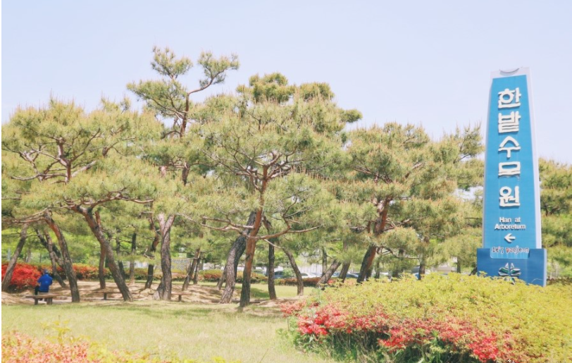

대전은 남한의 심장부에 위치하여 중도라고도 불립니다. 대전은 한국의 과학도시입니다. 지리적으로 중부지역에 위치하여 기후가 온난하고, 대전의 연평균기온은 12.3도 이다.
Food
성심당
⭐️⭐️⭐️⭐️⭐️
대전 중구에 위치한 성심당 본점입니다.
빵순이들에 성지로 불리는 성심당 입니다! 대표 메뉴로 튀김소보루가 있고 정말 많은 빵들이 준비되어있습니다. 오래도록 꾸준한 사랑으로 받아온 점포입니다. 대전을 간다면 꼭 성심당을 들려 많은 빵들을 먹어보세요!
영업시간
평일 08:00 - 22:00
주말 08:00 - 23:00
오씨칼국수
⭐️⭐️⭐️⭐️
대전 동구에 위치한 오씨 칼국수 입니다.
수타면을 이용한 칼국수 전문점 입니다. 멸치 다시마를 오래도록 우려낸 육수에 현지 직송의 조개를 사용하여 만든 바지락 칼국수가 대표메뉴입니다.
여유를 두고 미리 가는것을 추천합니다! 점심시간에는 사람이 많아서 오랜시간 기다릴수도있습니다.
View
식장산

⭐️⭐️⭐️⭐️
대전 동구 대성동에 위치한 식장산 입니다.
대전과 충청북도에 걸쳐있는 산 입니다. 정상에 오르면 대전의 모습을 한눈에 담을수 있습니다. 특히 야경이 멋있어 가족들과 커플들이 많이 찾는 야경 맛집입니다.
안개가 낀다면 야경이 잘 안보일수 있습니다 ㅠ
한밭수목원
⭐️⭐️⭐️⭐️
한밭수목원은 대전 서구에 위치하였습니다.
도심 속의 한밭수목원은 정부대전청사와 과학공원의 녹지축을 연계한 전국 최대의 도심 속 인공수목원으로 각종 식물종의 유전자 보존, 청소년들에게 자연체험학습의 장, 시민들에게는 도심속에서 푸르름을 만끽하며 휴식할 수 있는 공간을 제공하는데 목적이 있습니다.
열대 식물들이 가득합니다. 꼭 삼각대를 챙겨서 방문하세요! 다양한 사진을 찍을수 있습니다.
Landmark
대전오월드
⭐️⭐️⭐️⭐️⭐️
대전 중구 사정공원로에 위치한 대전오월드 입니다.
도심 속에서 즐기는 테마파크 입니다. 사랑스러운 동물들이 많고 다양한 놀이 기구가 있습니다. 최근에는 버드랜드로 다양한 새들을 만나볼수있는 체험을 하고있습니다.
5월 1일 부터 10/30일까지 매주 토요일에 야간개장을 하고있으니 꼭 들려보세요!
갤러리아백화점
⭐️⭐️⭐️⭐
대전 서구 대덕대로에 위치한 갤러리아백화점 입니다.
다양한 브랜드가 입점해 있어 쇼핑을 하기에 가장 최적화 되어있고 쇼핑을하다 배가고프다면 푸드코너에 많은 메뉴가 준비되어 있습니다. 또한 백화점 주변으로 많은 카페와 식당이 자리해있어 음식을먹고 쇼핑하기 좋은 곳 입니다.
영업시간
평일 10:30 - 20:00
주말 10:30 - 20:30